Somos la hamburguesería
artesanal que más creció
Hoy sumamos más de 50 franquicias, un centro de producción propio y una flota de camiones que lleva la mercadería a cada uno de nuestros locales.
Seguimos en plena expansión: la meta es cerrar el año con 70 locales y llegar a más de 200 franquicias en 2027. Somos una marca joven, con un producto de primera calidad y un objetivo claro: llegar a cada rincón, y ¿por qué no?, al mundo entero.
Nuestro grupo reúne hoy tres marcas gastronómicas y un centro de producción propio.
No quisimos ser una hamburguesería más, sino una experiencia: una explosión de sabores a la altura de los grandes banquetes. Así nos volvimos puerto seguro para todos los que buscaban algo diferente, algo genuino.
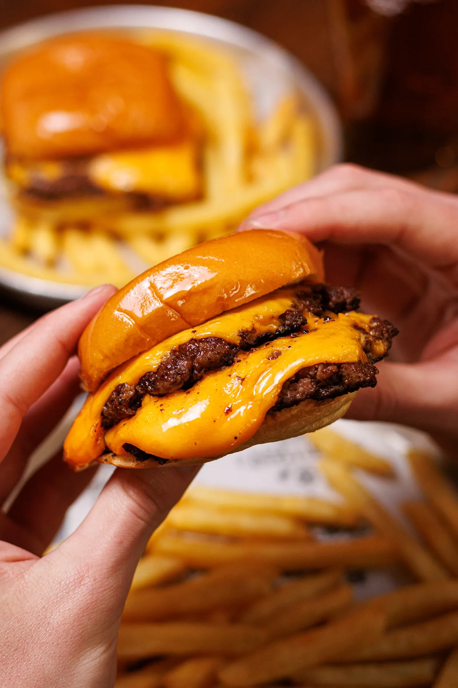
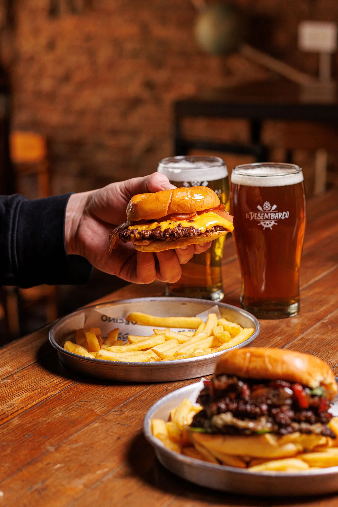
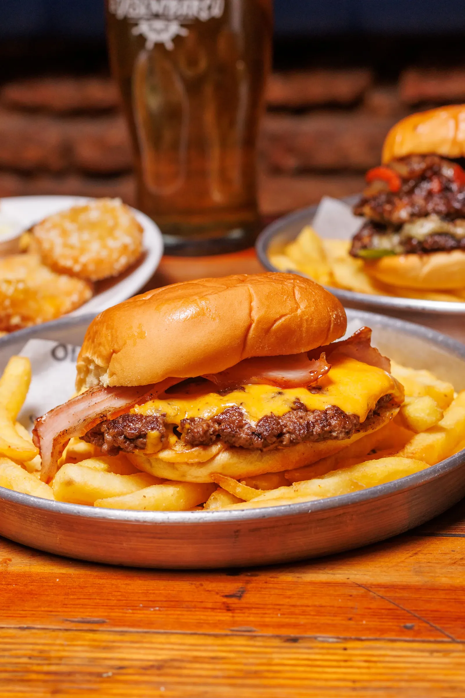
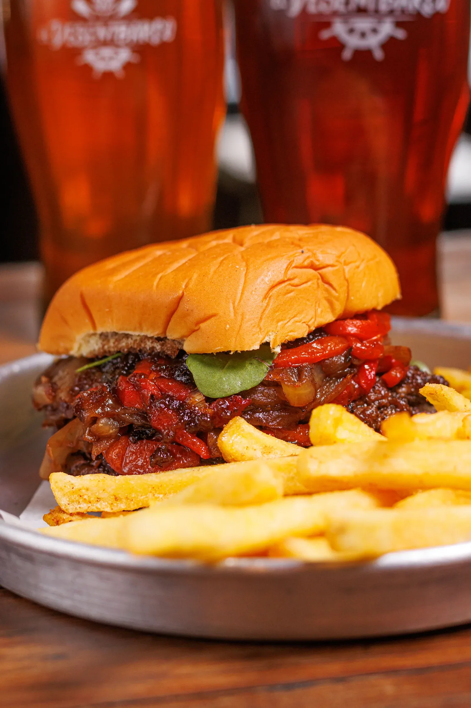
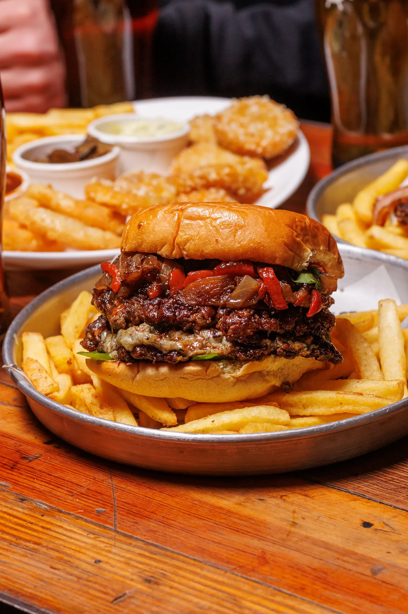
De un pequeño local
a una marca que cruza fronteras
Todo empezó en 2017, cuando su fundador abrió el primer local con muy poco dinero y una idea bien clara: hamburguesas artesanales, sin conservantes, con identidad propia y una experiencia moderna. Lo que arrancó como un emprendimiento chico se convirtió en una marca de referencia del fast casual, con más de 50 locales, presencia fuera del país y una comunidad de fanáticos que no para de crecer.
Hoy El Muelle sigue creciendo, sin perder nunca el sabor que lo convirtió en leyenda.
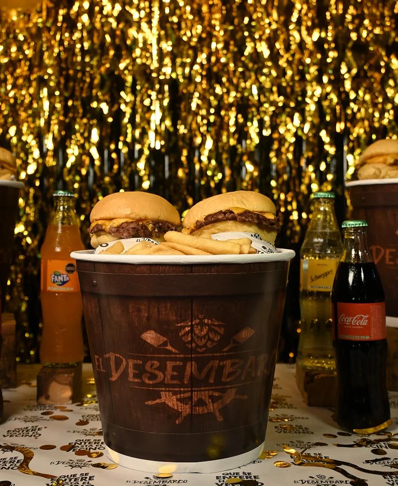
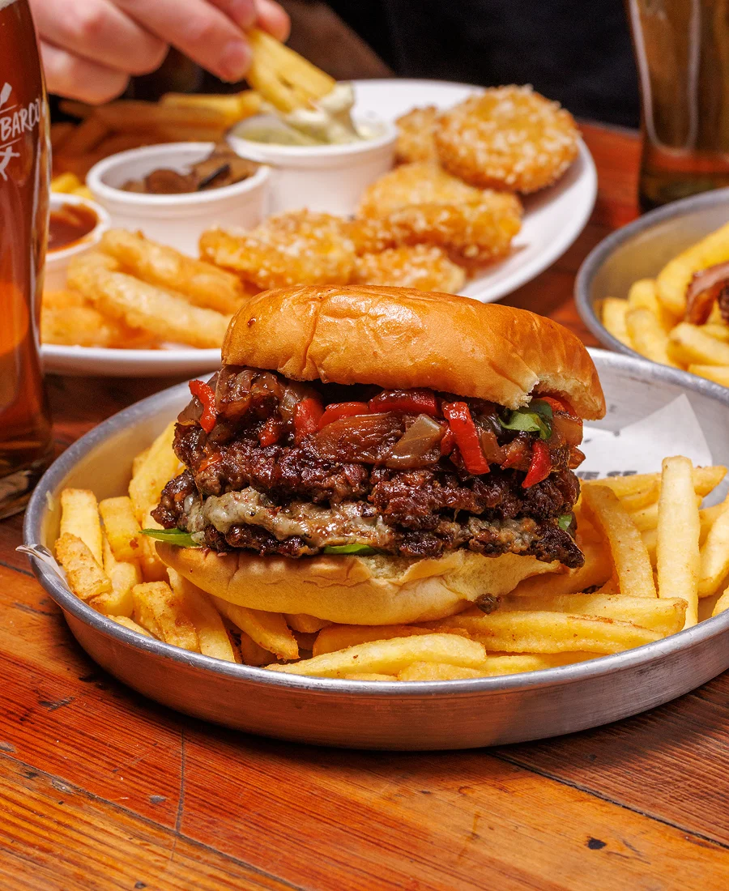
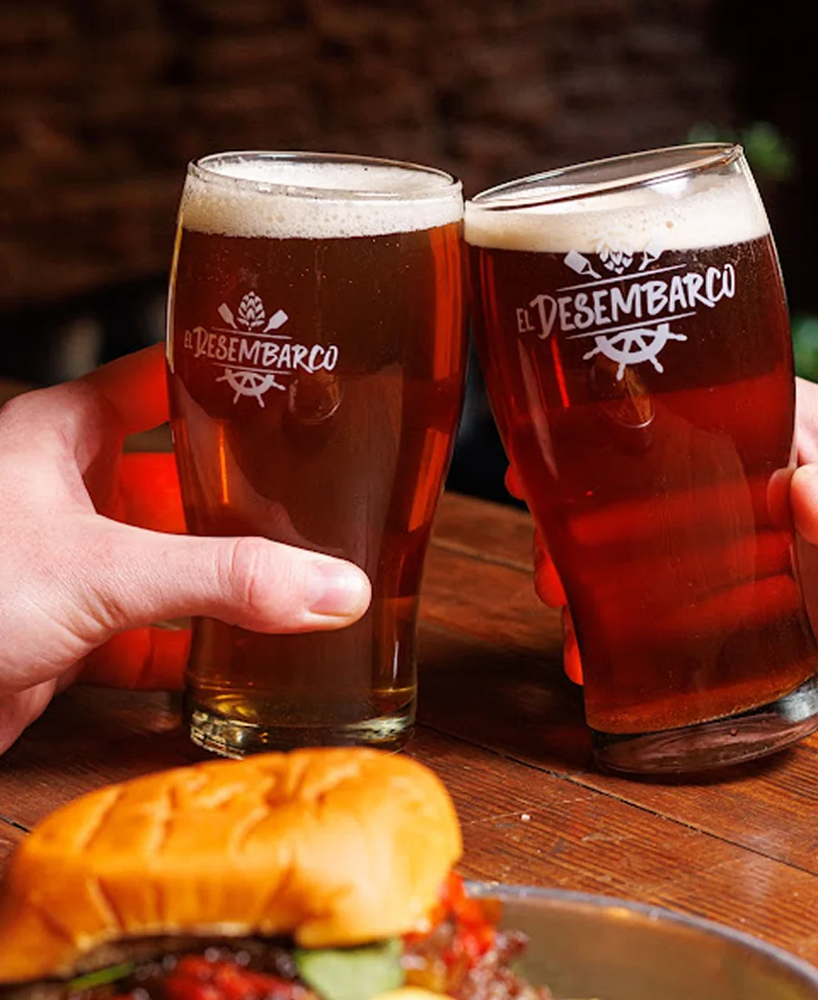
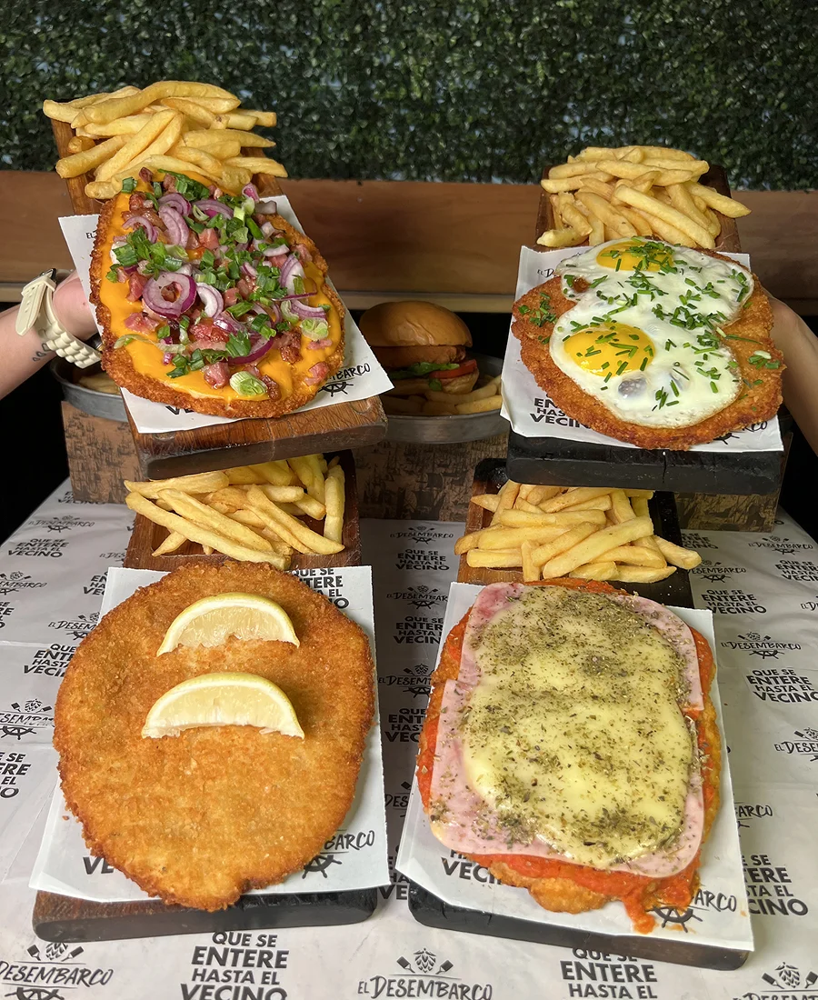
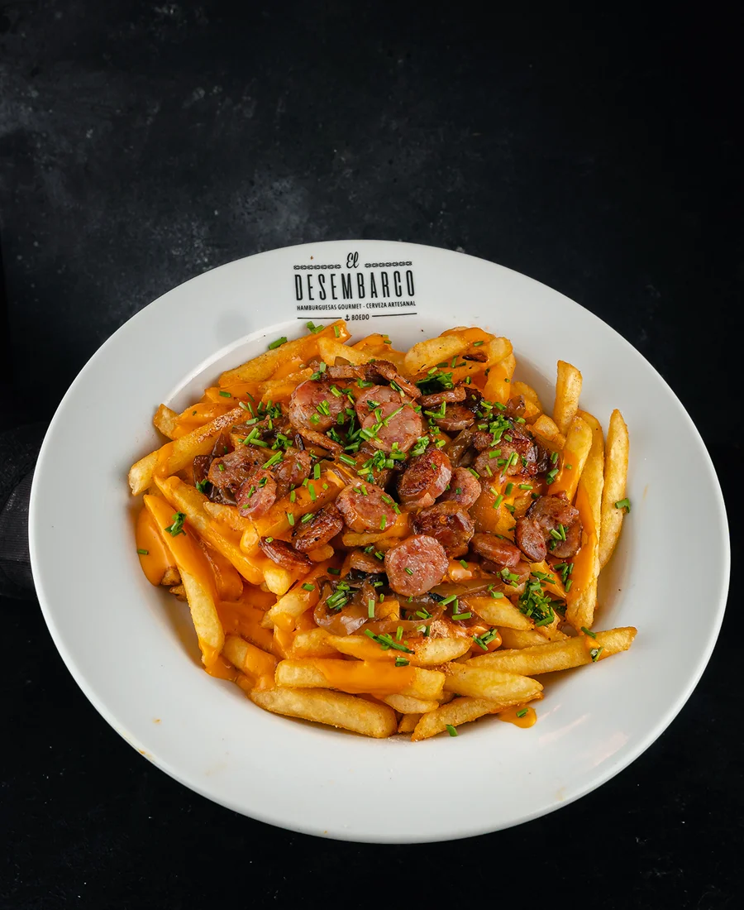
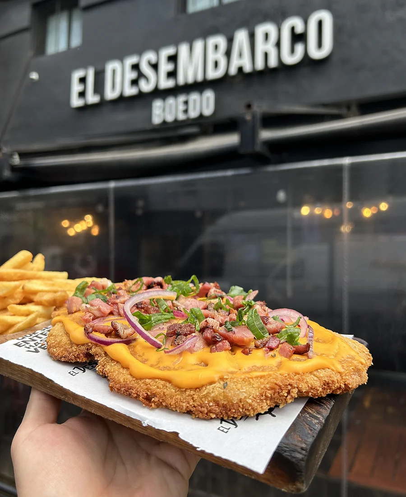
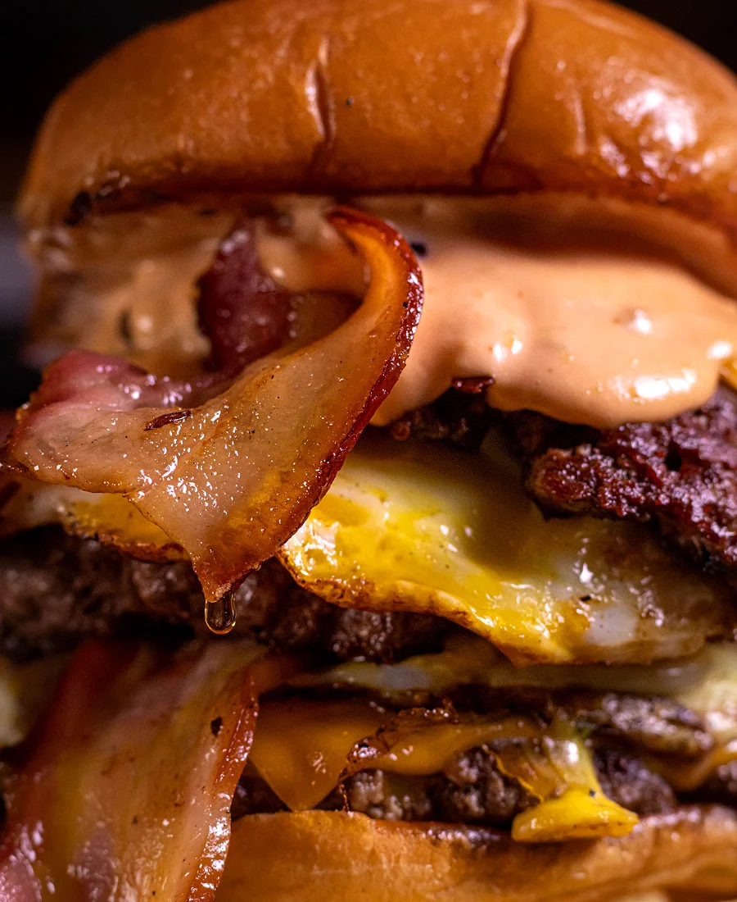
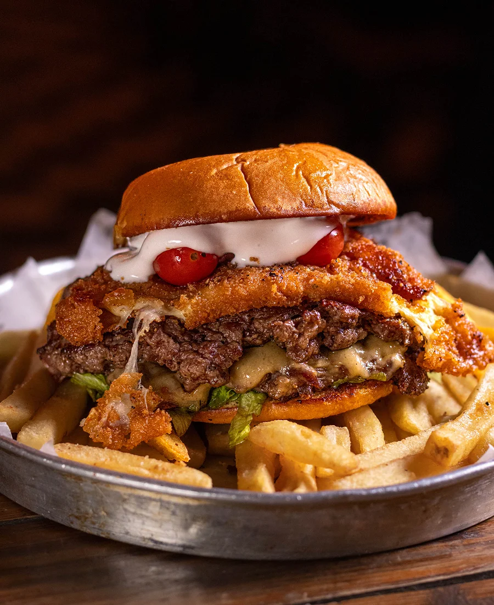
Nuestras marcas
Nuestro grupo gastronómico suma marcas que comparten la misma pasión por la comida bien hecha. Cada una tiene su personalidad, pero todas tienen el mismo compromiso con la calidad y la experiencia.
Nuestra forma de llevar una gran hamburguesa al día a día: ingredientes premium, procesos ágiles y precios accesibles, con la calidad de siempre y la rapidez del fast food.
Ver la carta →La milanesa de siempre, con una vuelta nueva. Recetas abundantes y sabrosas, con ese toque casero que nos devuelve a lo más auténtico de la cocina argentina.
Ver la carta →Lo que dicen quienes vienen
Cada hamburguesa tiene su historia, y nada nos pone más contentos que ver cómo esas historias se cuentan.
Estas son algunas de las experiencias de quienes nos visitan todos los días.